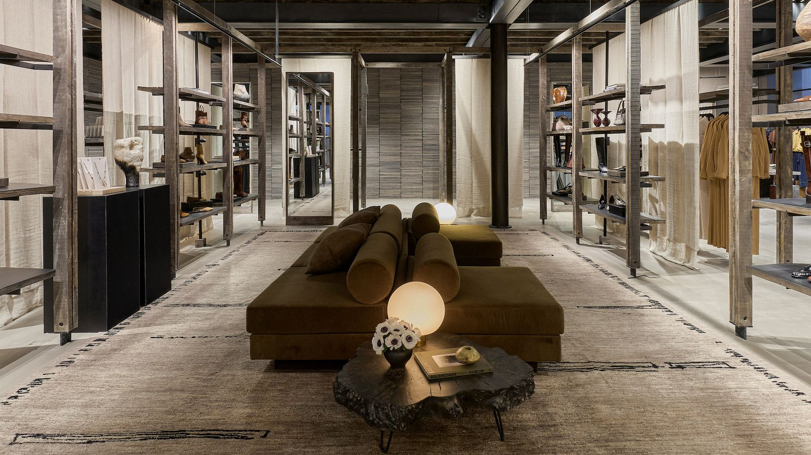
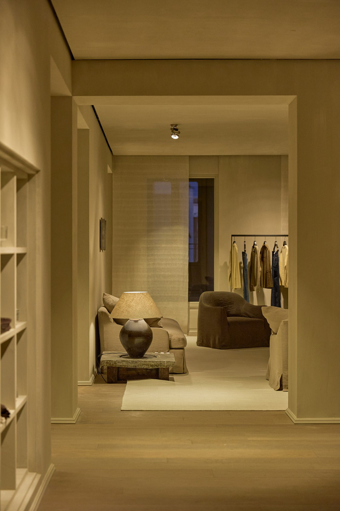
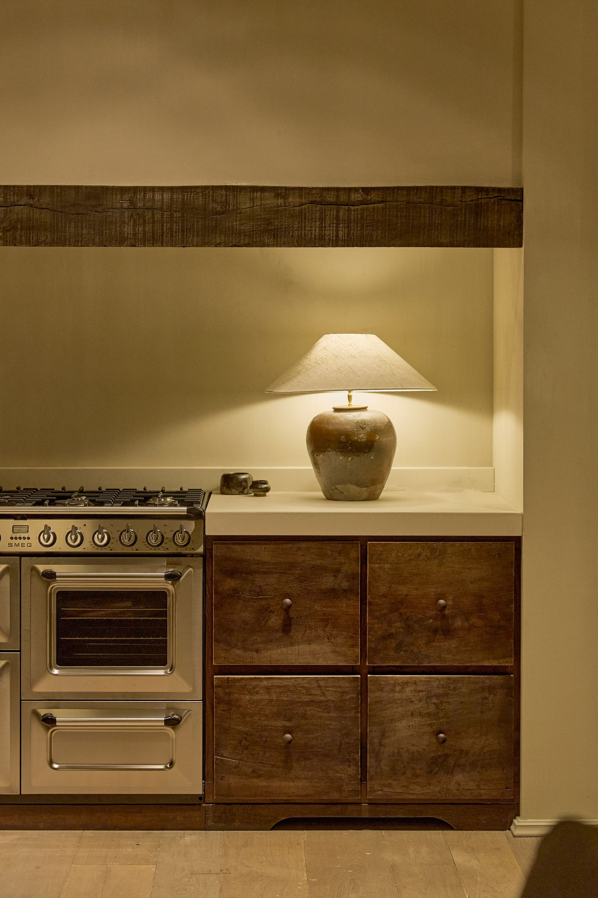
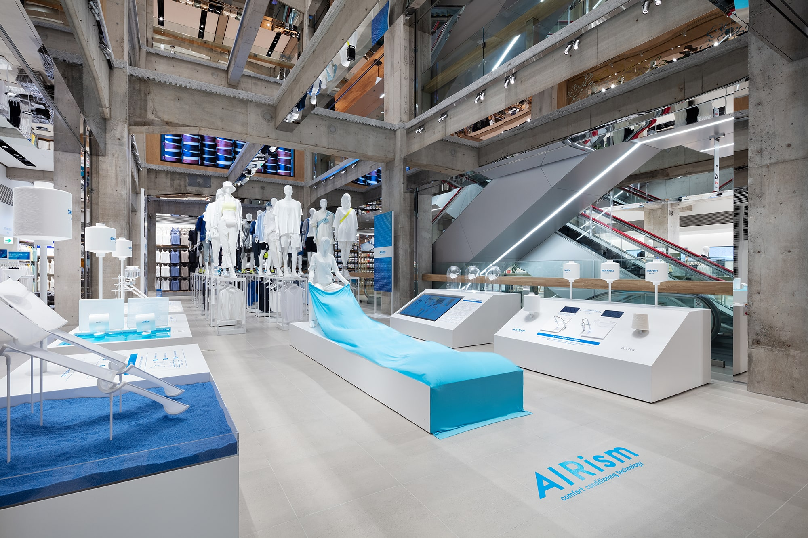
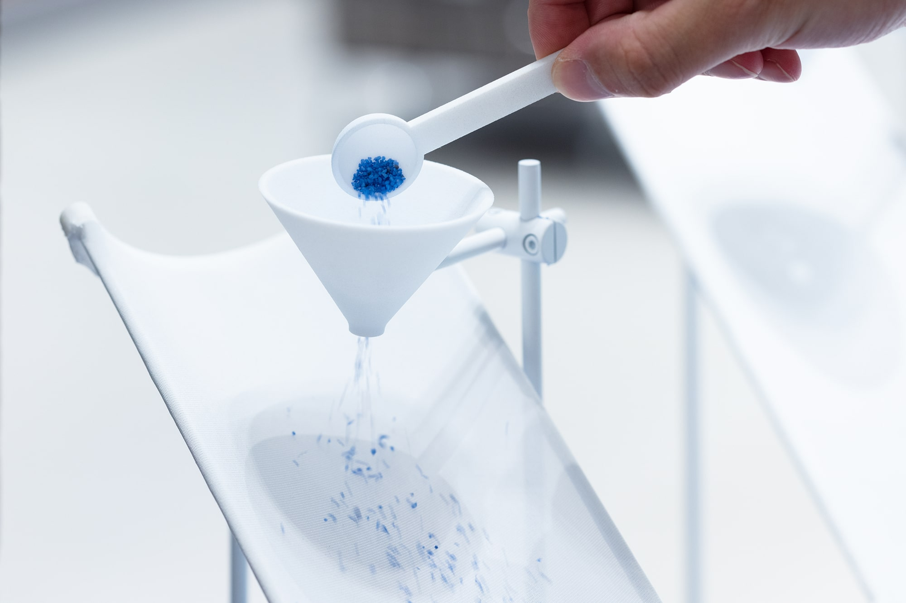

ZARA 的马德里 Serrano 店把衣服放进有沙发、台灯与厨房的生活场景；银座的 UNIQLO TOKYO 则打开旧楼的楼板，让不同楼层的商品与展示彼此可见。前者让人想象衣服属于怎样的生活，后者让人认识衣服有哪些选择、具有什么功能。空间参与了对服装的解释。
这种差别不能只用“高级”或“实用”概括。房间的大小、衣架之间的距离、灯光照向哪里，以及能否看见上一层，都会改变人先注意什么、接下来往哪里走。
本文选取两个具体案例：2025 年改造的 ZARA Serrano 店，尤其是其中的 El Apartamento 住宅式区域；以及 2020 年开业的 UNIQLO TOKYO。通过这两处旗舰店，可以看清品牌如何把服装理念落实为空间。
ZARA：把衣服放进一个完整的房间

ZARA Serrano 店，2025 年改造。图片由 ZARA 提供，刊于 AD España 的建筑师访谈。
这张照片的中心留给了沙发、地毯与矮桌。服装和配饰沿两侧展开，开放架把鞋、包与器物分开摆放，后方的落地镜又把空间向纵深延伸。
如果只以单位面积能摆多少衣服衡量，中央完全可以再加几排货架。现在的安排却先建立了一个可以停留的地方。人的视线能越过低矮家具，再逐渐落到两侧商品；衣服与鞋包也有了不同的观看距离。
这里有两种尺度同时存在：沙发与地毯围成一个较小的区域，接近客厅；两侧成排的架子又维持着门店的连续性。它没有把商业空间完全伪装成私人住宅，而是在仍然能够浏览商品的地方，加入了居住的线索。
这样的陈列也在提示搭配。鞋、包、首饰与衣服进入同一视野时，人更容易把它们看成一组形象，而非互不相关的品类。深色框架、米色织物与棕色家具又限制了背景的颜色，让商品能够在一个相对连贯的环境中出现。
这与品牌造型照片有相似之处：照片通过人物、服装和背景建立关系，门店则允许人走进这些关系，绕到物品旁边，触摸和试穿。
El Apartamento：住宅场景怎样改变商品的含义
Serrano 店中的 El Apartamento，由 Elsa Urquijo 建筑事务所设计。项目参与方 Grupo Malasa 的资料说明，这一约 400 平方米的区域设置了客厅、卧室、厨房等房间，结合展示 ZARA 与 ZARA Home 的精选产品。El Apartamento 项目资料

El Apartamento。图片由 ZARA 提供，来源同上。
照片中的门洞把一个空间接到下一个空间。近处能看到台灯与沙发，远处才出现衣架。衣服没有占满画面，却被安排在观看的终点：先看到房间的气氛，再看到可以穿在身上的东西。
门洞在这里像一层取景框。站的位置不同，被框住的家具和衣服也会变化。它让浏览分成一段段距离：从通道看见房间，走近座椅，再转向衣架。这种空间序列，与站在长排货架前横向寻找尺码，有不同的节奏。
衣架上的浅色衣服与墙面、窗帘接近，深色裤装则成为局部的对比。衣服被放进一套已经组织好的色彩关系中。由此产生的吸引力，包含了服装本身，也包含“它和周围这些东西放在一起很合适”的感觉。
这解释了住宅场景的商业作用。单独一件上衣，只能提供有限的形象线索；放在台灯、座椅与织物旁边，它便与一种生活环境建立联系。品牌通过选择哪些东西相邻、哪些颜色重复，展示自己认为什么样的组合值得被看见。
不过，衣服在场景里合适，与穿在自己身上合适，是两个判断。房间能帮助人想象，也会把一部分环境的吸引力带到商品上。空间分析需要看见这层转移，才能解释门店为什么愿意把面积留给家具。

El Apartamento 的厨房。图片由 ZARA 提供，来源同上。
厨房照片能进一步说明，所谓“精致”是怎样被做出来的。木质柜门有明显的纹理，台面相对平整，炉具带有金属反光，台灯的织物灯罩则把光线变成一个柔和的亮面。几种表面彼此有区别，颜色又集中在相近范围内。
如果所有表面都同样光滑、同样明亮，材料之间的差异就会减弱。这里保留了纹理、反光与阴影，人的视线有了可以停留的细节。台灯又把照明降到接近桌面的高度，使厨房的一角获得了居家感，而不只是均匀照亮的售卖背景。
建筑师在访谈中提到，Serrano 改造希望重新加入砖、铁、砂浆等材料，与当地建筑建立联系。施工方 KIMAK 的项目说明也记录了黄铜入口构件、外露钢梁与沿楼层变化的材料处理。这些做法表明，住宅气氛背后还有建筑构件与材料选择的配合。建筑师访谈；KIMAK 项目记录
优衣库：打开楼板，让不同楼层成为同一个空间
UNIQLO TOKYO 位于银座的 Marronnier Gate Ginza 2，2020 年开业。项目由佐藤可士和参与整体创意，Herzog & de Meuron 负责部分内外空间设计，乃村工艺社参与室内设计与施工。优衣库开业资料；乃村工艺社项目记录
这栋旧楼原有吊顶与饰面，楼层之间的视觉联系有限。改造暴露出混凝土梁柱，并在部分楼板开口，形成贯通四层的中庭。中庭就是建筑内部向上敞开的空间：站在底层，可以看见上方多个楼层。Herzog & de Meuron 项目说明

UNIQLO TOKYO，2020 年的 LifeWear Square 首展。摄影：Takumi Ota；来源：TAKT PROJECT。
照片中，粗大的梁柱保留在视野里，自动扶梯从右侧斜穿而过。不同楼层的开口之间，仍然能看到横梁。建筑既呈现整体的高度，也让每一层的位置容易辨认。
这种做法改变了楼层的关系。封闭楼板把卖场分成几个彼此隔开的平面；中庭则允许顾客还没上楼，就先看见别处的展示。向上看本身就成为浏览的一部分，底层的展区也获得了跨楼层的可见性。
外露混凝土提供了一个偏灰、连续而有分量的背景，服装与展示装置的颜色因此更突出。图中白色展台、蓝色面料和后方挂装各有位置；上方的屏幕与镜面又在梁柱之间插入变化。空间有明确的结构，也容纳了不同内容。
它并非把建筑处理得越空越好。梁柱形成的格子，帮助组织视线；连续的开口让整体可见，局部的展台与商品区再提供停留的对象。开阔感与可以辨认的分区，需要一起存在。
打通楼层意味着拿出一部分原本可以陈列商品的楼板面积，换取楼层间的联系与展示空间。因此，用“优衣库只追求多摆货、提高效率”解释这个项目，会遗漏它最显著的设计决定。
LifeWear Square：把面料功能变成可观察的过程
优衣库将一层中央区域命名为 LifeWear Square，用来呈现品牌的服装理念。2020 年开业时，TAKT PROJECT 为这里设计了 AIRism 主题展览，把面料的顺滑、透气与吸湿速干等特点，转成可以操作的展示。TAKT PROJECT 的展览说明

AIRism 展览细节，2020 年。摄影：Takumi Ota；来源同上。
这张图里，蓝色颗粒从漏斗落到倾斜的白色面料上。原本需要用手感描述的“顺滑”，被改成了一个能看见运动的过程。颗粒的颜色与布面区分开，动作很小，观看重点却明确。
同一展览还设计了让风穿过面料推动小船、滴水观察吸湿速干的装置。它们把功能说明分解为动作：倒入、吹动、滴下、观察。面料不再只作为衣服内部的一项参数出现，也成为可以被单独认识的材料。
这些装置的作用是传达产品特点，并不等同于完整的标准化性能测试。它们在门店里的意义，是给“这件衣服为什么值得了解”提供一个可接近的入口。顾客可以先理解一种功能，再回到具体产品。
展览与中庭也相互配合。白色、蓝色和相对低矮的展台集中在下方，上层视线能够进入；扶梯与楼层边缘又提供不同角度。展区因此既是一处近距离体验，也成为整间店中容易识别的中心。
这里同样有氛围：明亮的面料、轻巧的装置和颗粒运动，构成一种轻盈、清爽的观看感受。优衣库把情境建立在服装功能上，与 ZARA 借助居住场景组织商品，采用了不同的解释路径。
两种空间，各自把什么放在前面
回到两张主要照片，差别会比品牌标签更清楚。
ZARA 的房间用门洞、家具和局部光线分出层次，衣服进入生活场景。它把相邻物品的搭配关系放在前面：这件衣服与哪些颜色、材质、器物共同出现，会形成怎样的形象。即使暂时没有穿在模特身上，商品也有了可以参照的整体风格。
UNIQLO TOKYO 用中庭连接楼层，再以中央展区解释服装功能。它把整体范围与产品理由放在前面：还有哪些内容可以看，一种面料为什么适合被做成日常服装。单件衣服由此连接到品牌的产品体系。
两者都使用留白，也都承担取舍。ZARA 把面积留给房间和家具，换来了完整的场景，却减少了同一视野中可直接比较的商品数量；优衣库拿出楼板与中心区域做中庭和展览，换来了空间联系，同时仍要靠分区与标识帮助人寻找具体商品。设计是否合适，需要结合这家店要展示什么来理解。
因此，空间的品牌辨识度，并不只来自墙上使用哪一种颜色或标志。它还来自一个更具体的安排：进店后，品牌先让人理解衣服的哪一面。Serrano 的沙发与衣架、UNIQLO TOKYO 的混凝土梁与面料装置，分别把这个选择变成了可以看见的东西。
资料与图片
本文依据项目参与方资料、建筑师访谈及公开项目照片分析，资料核对至 2026 年 10 月。讨论对象为上述两处旗舰店及对应年份的空间；AIRism 图片展示的是 2020 年首展。照片用于具体空间细读，权利归原权利人所有；文章未作现场测量或客流、销售效果判断。
留言
由 Disqus 提供。